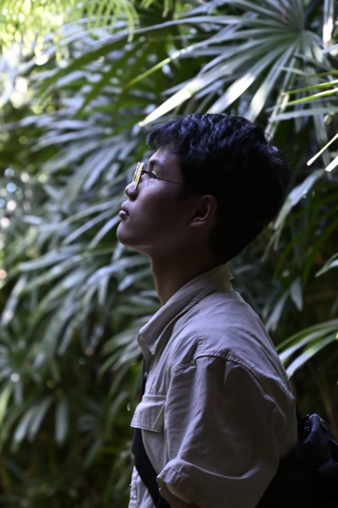

趙泓棨
亞洲大學 Asia University | 學號：114055055
Email: a0921864431@gmail.com
Location: Taichung, Taiwan

Education
亞洲大學
2025 — 2029
室內設計學系 / Interior Design
Professional Skills
空間規劃與平面配置
AutoCAD / SketchUp / V-Ray
Copic 麥克筆表現技法
模型製作與精細改裝
極簡美學與工業風格